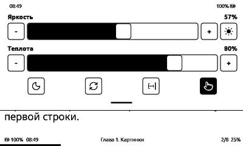

Как сейчас
Снимок симулятора, 2026-11-13: шторка поверх страницы книги. В симуляторе 4 плитки (Bluetooth в нём не собран), на читалке 5.

Часть 1. Экран настройки плиток
На этом экране выбираются плитки шторки и их порядок.
- Ситуация. Экран «Плитки шторки» в настройках: все 7 плиток списком.
- Действие. Тап по квадратику — плитка есть в шторке или нет; ▲ ▼ — переставить выше или ниже.
- Результат. Шторка показывает отмеченные плитки в порядке списка; на картинке: «Ночной режим», «Очистка экрана», «Сон», «Фонарик», «Ориентация».
- Ситуация. Экран «Плитки шторки»: сверху плитки в шторке, снизу — остальные.
- Действие. Тап по плитке сверху — плитка уходит вниз; тап по плитке снизу — плитка встаёт в конец верхнего ряда; порядок меняется долгим тапом по плитке и тапами ‹ ›.
- Результат. Шторка показывает верхний ряд в его порядке; плитки на экране настройки нарисованы, как в шторке.
- Ситуация. Шторка в режиме правки: у каждой плитки крестик, в конце пустое место «+».
- Действие. Крестик убирает плитку; «+» открывает список того, что можно добавить; «Готово» закрывает правку.
- Результат. После «Готово» шторка показывает новый ряд плиток; отдельного экрана настроек нет.
- Ситуация. Экран «Плитки шторки»: места по номерам, у каждого места — плитка, которая на нём стоит.
- Действие. Тап по месту открывает окно выбора плитки, как у пунктов обычных настроек; выбор «нет» оставляет место пустым.
- Результат. Порядок плиток в шторке задаётся номером места. Окно выбора из настроек в прошивке уже есть.
Часть 2. Как попасть в настройку плиток прямо из шторки
Любой из этих входов открывает экран из части 1 (или режим правки В).
- Ситуация. Шторка открыта; рядом с батареей — шестерёнка.
- Действие. Тап по шестерёнке.
- Результат. Открывается настройка плиток; ряд плиток не меняется.
- Ситуация. Шторка открыта; последняя плитка с карандашом, обведена пунктиром.
- Действие. Тап по плитке с карандашом.
- Результат. Открывается настройка плиток; плитка «Настроить» занимает одно место в ряду.
- Ситуация. Шторка открыта; ряд плиток как сейчас, без новых значков.
- Действие. Удержать палец на плитке.
- Результат. Над плиткой всплывает надпись «Настроить плитки»; тап по надписи открывает настройку. Обычный тап по плитке работает как раньше.
- Ситуация. Шторка открыта; под плитками справа — строка «Настроить плитки ›».
- Действие. Тап по строке.
- Результат. Открывается настройка плиток; шторка становится длиннее на одну строку.